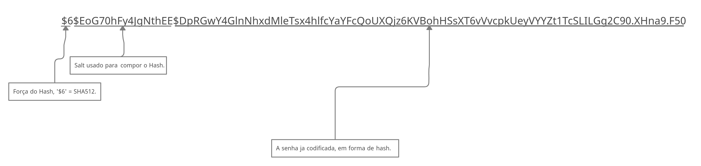

Índice107.1 Tarefas administrativas/etc/passwd/etc/shadow/etc/group/etc/gshadow/etc/login.defsuseradduserdelusermodgroupaddgroupdelgroupmodnewgrpIDgroupsgetentchage
Cada usuário tem um grupo padrão e grupos secundários, quando um usuário é criado, suas informações são armazenadas em /etc/passwd, /etc/shadow, /etc/group e /etc/gshadow.
Toda vez que criamos um usuário no Linux, as informações do usuário em sí são armazenadas aqui, como veremos mais abaixo:
$ cat /etc/passwdroot:x:0:0:root:/root:/bin/bashdaemon:x:1:1:daemon:/usr/sbin:/usr/sbin/nologinbin:x:2:2:bin:/bin:/usr/sbin/nologinsys:x:3:3:sys:/dev:/usr/sbin/nologinsync:x:4:65534:sync:/bin:/bin/syncgames:x:5:60:games:/usr/games:/usr/sbin/nologinman:x:6:12:man:/var/cache/man:/usr/sbin/nologinlp:x:7:7:lp:/var/spool/lpd:/usr/sbin/nologinmail:x:8:8:mail:/var/mail:/usr/sbin/nologinnews:x:9:9:news:/var/spool/news:/usr/sbin/nologinuucp:x:10:10:uucp:/var/spool/uucp:/usr/sbin/nologinproxy:x:13:13:proxy:/bin:/usr/sbin/nologinwww-data:x:33:33:www-data:/var/www:/usr/sbin/nologinbackup:x:34:34:backup:/var/backups:/usr/sbin/nologinlist:x:38:38:Mailing List Manager:/var/list:/usr/sbin/nologinirc:x:39:39:ircd:/var/run/ircd:/usr/sbin/nologingnats:x:41:41:Gnats Bug-Reporting System (admin):/var/lib/gnats:/usr/sbin/nologinnobody:x:65534:65534:nobody:/nonexistent:/usr/sbin/nologin_apt:x:100:65534::/nonexistent:/usr/sbin/nologinsystemd-timesync:x:101:102:systemd Time Synchronization,,,:/run/systemd:/usr/sbin/nologinsystemd-network:x:102:103:systemd Network Management,,,:/run/systemd:/usr/sbin/nologinsystemd-resolve:x:103:104:systemd Resolver,,,:/run/systemd:/usr/sbin/nologinmessagebus:x:104:110::/nonexistent:/usr/sbin/nologinsshd:x:105:65534::/run/sshd:/usr/sbin/nologinvagrant:x:1000:1000:vagrant,,,:/home/vagrant:/bin/bashsystemd-coredump:x:999:999:systemd Core Dumper:/:/usr/sbin/nologinmemcache:x:106:113:Memcached,,,:/nonexistent:/bin/falsepostfix:x:107:115::/var/spool/postfix:/usr/sbin/nologinVamos entender a intentificação dos campos:
| N° do campo | Campo | Descrição |
|---|---|---|
| 1 | Nome | É o nome do usuário. |
| 2 | Senha | Antigamente o passwd continha a senha do usuário, hoje em dia essa senha fica armazenada em outro lugar, então normalmente você sempre verá um x no segundo campo. |
| 3 | UID | O número referente ao ID do usuário. |
| 4 | GID | O número referente ao ID do grupo desse usuário. |
| 5 | Descrição | É dado qualquer descrição para o usuário, o comando adduser é um script que nesse campo insere informações como Full Name, Room Number, Work Phone, Home Phone, Other. |
| 6 | Home | Aqui fica a localização da Home do usuário. Uma coisa bem legal, se ele não for ter uma Home, você pode colocar como /nonexistent. |
| 7 | Shell | Aqui é o Shell padrão desse usuário. Quando você não quer que esse usuário logue, você pode usar como shell o /usr/sbin/nologin ou /bin/false, tudo vai depender do seu sistema ter 1 desses binários ou ambos. |
O Linux trabalha somente com UID e GID, ele não trabalha com o nome do usuário, vendo isso, você pode ter 2 usuários com mesmo UID/GID, o problema é que se forem pessoas diferentes, ambos teriam acesso as coisas um do outro.
Não é recomendado editar diretamente o
passwd, para isso temos comandos como gpasswd, usermod, groupmod entre outros comandos.Caso você tenha que editar o
passwddiretamente, use o comandovipw.
Aqui ficam as senhas dos usuários, elas são armazenadas em hash, normalmente usando o sha512.
xxxxxxxxxx$ sudo getent shadowroot:!$6$nskk4G6FApGIgmZJ$3X/k81QuR1CfzO2n49OcyACZH3LLV6IV/mm7sxxy0FM5wyoLj4m9aI4hX7.qQOoyBfNgoCUbCPQM1bVQFY2Ak/:18669:0:99999:7:::daemon:*:18669:0:99999:7:::bin:*:18669:0:99999:7:::sys:*:18669:0:99999:7:::sync:*:18669:0:99999:7:::games:*:18669:0:99999:7:::man:*:18669:0:99999:7:::lp:*:18669:0:99999:7:::mail:*:18669:0:99999:7:::news:*:18669:0:99999:7:::uucp:*:18669:0:99999:7:::proxy:*:18669:0:99999:7:::www-data:*:18669:0:99999:7:::backup:*:18669:0:99999:7:::list:*:18669:0:99999:7:::irc:*:18669:0:99999:7:::gnats:*:18669:0:99999:7:::nobody:*:18669:0:99999:7:::_apt:*:18669:0:99999:7:::systemd-timesync:*:18669:0:99999:7:::systemd-network:*:18669:0:99999:7:::systemd-resolve:*:18669:0:99999:7:::messagebus:*:18669:0:99999:7:::sshd:*:18669:0:99999:7:::vagrant:$6$vBQNRSCwtEZ89TPd$MwvF6eKzvgeF2k29uVdBPRJi8nNdb.XPXgWTWskuDfoUQYo44OiAUKbidj4x5RLssdh2ryRIevdSIOe2.41ur1:18669:0:99999:7:::systemd-coredump:!!:18669::::::memcache:!:18669:0:99999:7:::postfix:*:18669:0:99999:7:::roberto:$6$EoG70hFy4JgNthEE$DpRGwY4GlnNhxdMleTsx4hlfcYaYFcQoUXQjz6KVBohHSsXT6vVvcpkUeyVYYZt1TcSLILGg2C90.XHna9.F50:18784:0:99999:7:::
Vamos ver como funciona cada campo.
| N° do campo | Campo | Descrição |
|---|---|---|
| 1 | Usuário | Nome do usuário. |
| 2 | Senha | Contém o hash com a senha do usuário. |
| 3 | Data de mudança | Informa a ultima mudança da senha, o padrão número é desde 1 de Jan de 1970. O valor 0 siginifica que a senha deve ser alterada no próximo login. Um campo vazio significa que os recursos de expiração de senha estão desativados. |
| 4 | Idade mínima da senha | Tempo que o usuário deve esperar até poder mudar a senha de novo. Um campo vazio significa que isso não existe. |
| 5 | Idade máxima da senha | A duração máxima da senha é o número de dias após os quais o usuário terá que alterar sua senha. Um campo vazio significa que não há duração máxima da senha. Se a duração máxima da senha for inferior à duração mínima da senha, o usuário não poderá alterar sua senha. |
| 6 | Período de aviso de senha | O número de dias antes que uma senha expire (consulte a idade máxima da senha acima) durante os quais o usuário deve ser avisado. Um campo vazio e o valor 0 significam que não há período de aviso de senha. |
| 7 | Período de inatividade da senha | O número de dias após a expiração de uma senha (veja a idade máxima da senha acima) durante os quais a senha ainda deve ser aceita (e o usuário deve atualizar sua senha no próximo login). Após a expiração da senha e decorrido este período de expiração, não é possível fazer o login com a senha do usuário atual. O usuário deve entrar em contato com seu administrador. Um campo vazio significa que não há aplicação de um período de inatividade. |
| 8 | Data de expiração da conta | A data de vencimento da conta, expressa como o número de dias desde 1º de janeiro de 1970. Observe que a expiração de uma conta é diferente de uma expiração de senha. Em caso de expiração de conta, o usuário não terá permissão para fazer o login. Em caso de expiração de senha, o usuário não tem permissão para fazer o login com a senha dela. Um campo vazio significa que a conta nunca irá expirar. O valor 0 não deve ser usado, pois é interpretado como uma conta sem vencimento ou como vencimento em 1º de janeiro de 1970. |
| 9 | Campo reservado | Este campo está reservado para uso futuro. |
Algumas observações sobre o campo de senhas, se você ver um * ou ! e não ver uma senha (vide algum hash), isso significa que o usuário não será capaz de usar uma senha unix para fazer o login (mas o usuário pode fazer o login no sistema por outros meios).
A falta de Hash indica que o usuário não tem uma senha, mas se você ver um ! seguido de um hash, significa que a conta está bloqueada.

Vamos ver como são armazenados os grupos.
xxxxxxxxxx$ getent group root:x:0:daemon:x:1:bin:x:2:sys:x:3:adm:x:4:tty:x:5:disk:x:6:lp:x:7:mail:x:8:news:x:9:uucp:x:10:man:x:12:proxy:x:13:kmem:x:15:dialout:x:20:fax:x:21:voice:x:22:cdrom:x:24:vagrantfloppy:x:25:vagranttape:x:26:sudo:x:27:audio:x:29:vagrantdip:x:30:vagrantwww-data:x:33:backup:x:34:operator:x:37:list:x:38:irc:x:39:src:x:40:gnats:x:41:shadow:x:42:utmp:x:43:video:x:44:vagrantsasl:x:45:plugdev:x:46:vagrantstaff:x:50:games:x:60:users:x:100:nogroup:x:65534:systemd-journal:x:101:systemd-timesync:x:102:systemd-network:x:103:systemd-resolve:x:104:input:x:105:kvm:x:106:render:x:107:crontab:x:108:netdev:x:109:vagrantmessagebus:x:110:ssh:x:111:vagrant:x:1000:systemd-coredump:x:999:mlocate:x:112:memcache:x:113:ssl-cert:x:114:postfix:x:115:postdrop:x:116:roberto:x:1001:
Vamos ver como funciona cada campo.
| N° do campo | Campo | Descrição |
|---|---|---|
| 1 | Nome | É o nome do grupo. |
| 2 | Senha | É a senha do grupo, caso ele tenha. |
| 3 | GID | É o ID desse grupo. |
| 4 | Usuários | São os usuários que pertencem a esse grupo. |
Esse tem a mesma função do shadow, com a diferença que aqui, ele guarda as senhas para os grupos e não para usuários.
Arquivo de configuração de login para o usuários, aqui podemos configurar várias coisas, como: UID mínimo que será atribuido aos usuário (o padrao é começar a partir de 1000, mas podemos mudar isso), mudar o máximo de UID que vai ser permitido, podemos mudar os dias de idade das senhas, mudar a umask padrão atribuida a cada usuário e por ai vai.
Usado para adicionar um usuário. Sem argumento adiciona adiciona o usuário, não cria a home, a menos que você modifique o arquivo login.defs, mas devemos usar argumentos para facilitar a inserção do usuário.
| Opção | Relativo ao campo | Descrição |
|---|---|---|
| -c <descrição> | 5 | Adiciona informações sobre o usuário, deve separar cada conjunto de informações por ,. |
| -d <home> | 6 | Informa a localização do diretório Home na criação do usuário. |
| -m | Nenhum | Cria o diretório home. |
| -s <caminho completo do shell> | 7 | Especifica o shell para o usuário. |
| -g <número> | 3 | Especifica o GID do usuário (precisa ter criado o grupo antes). |
| -G <número> | nenhum | Especifica os grupos adicionais do usuário. |
| -u <numero> | 2 | Especifica o UID do usuário. |
| -p <senha> | nenhum | Adiciona a senha no momento da criação, para isso a senha deve estar com o hash, aconcelho a usar o comando openssl psswd -6 SENHA, para gerar esse hash. |
| -d <data> | nenhum | Define uma data de expiração para a conta |
Usado para remover um usuário.
Podemos usar apenas o comando userdel <username> ou podemos usar a opção -r, para remover a home do usuário.
Usado para modificar informações de um usuário.
| Opção | Relativo ao campo | Descrição |
|---|---|---|
| -c <descrição> | 5 | Adiciona informações sobre o usuário, deve separar cada conjunto de informações por ,. |
| -d <home> | 6 | Informa a localização do novo diretório Home. |
| -m | Nenhum | Move o conteúdo da home atual para a nova home, deve ser usado com -d. |
| -s <caminho completo do shell> | 7 | Especifica o shell para o usuário. |
| -g <número> | 3 | Especifica o GID do usuário (muda o GID padrão). |
| -a | nenhum | Faz um append, adiciona. |
| -G <número> | nenhum | Especifica os grupos adicionais do usuário, precisa informar a lista completa, caso contrário vai remover de todos os anteriores, para isso, use em conjunto o parametro -a (recomendo usar o comando gpasswd para trabalhar com a inserção de usuários em grupos). |
| -u <numero> | 2 | Especifica o novo UID do usuário. |
| -p <senha> | nenhum | Muda a senha do usuário, para isso a senha deve estar com o hash, aconcelho a usar o comando openssl psswd -6 SENHA, para gerar esse hash. |
| -L | nenhum | BLoqueia a conta. |
| -U | nenhum | Desbloqueia a conta. |
| -l <login> | 1 | Informa o novo nome de login da conta. |
Cria um grupo.
| Opção | Relativo ao campo | Descrição |
|---|---|---|
| -g <Número> | 3 | Informa o GID desse grupo. |
| -p <senha> | nenhum | Informa a senha desse grupo, aconcelho a usar o comando openssl psswd -6 SENHA, para gerar o hash.Pode ser usado o comando gpasswd grupo para criar essa senha também. |
Apaga um grupo, é só rodar groupdel <groupname>.
Modifica informações de um grupo.
| Opção | Relativo ao campo | Descrição |
|---|---|---|
| -g <número> | 3 | Especifica o GID do grupo (muda o GID padrão). |
| -n <group-name> | 1 | Muda o nome do grupo. |
| -p <senha> | nenhum | Muda a senha do grupo, para isso a senha deve estar com o hash, aconcelho a usar o comando openssl psswd -6 SENHA, para gerar esse hash.Pode ser usado o comando gpasswd grupo para criar essa senha também. |
Cuidado ao mudar o UID/GID, arquivos e diretórios não vão acompanhar essa mudança, você terá que aplicar as permissões para todos os arquivos e diretórios que antes pertenciam aos UID/GID.
Faz com que o grupo padrão do usuário seja algum outro grupo do qual ele faça parte, lembrando que isso é temporário.
x$ groups vagrant cdrom floppy audio dip video plugdev netdev teste# Perceba os grupos do qual o usuário vagrant faz parte. O grupo padrão é o primeiro.# Crie um arquivo:$ touch teste1# Verifique as permissões desse arquivo:$ ls -lh teste1-rw-r--r-- 1 vagrant vagrant 0 Jun 6 18:59 teste1# Agora altere o grupo padrão momentaneamente, o usuário deve fazer parte desse grupo:$ newgrp teste# Crie outro arquivo:$ touch teste2# Verifique as permissões desse arquivo:$ ls -lh teste2-rw-r--r-- 1 vagrant teste 0 Jun 6 19:01 teste2# Perceba que o grupo mudou.
O comando id é usado para verificar os IDs, sendo eles UID e GID, não só isso, ele mostra os IDs e nomes dos grupos comeplementares do qual o usuário faz parte.
xxxxxxxxxx$ iduid=1000(vagrant) gid=1000(vagrant) groups=1000(vagrant),24(cdrom),25(floppy),29(audio),30(dip),44(video),46(plugdev),109(netdev),1003(teste)# Listando de outro usuário:$ id rootuid=0(root) gid=0(root) groups=0(root)
Similar ao comando acima, mas esse informa somente os grupos, sem argumento, ele mostra os grupos do usuário atual e com argumento (username) ele vai mostrar do usuário selecionado.
xxxxxxxxxx# Listando sem argumentos:$ groups vagrant cdrom floppy audio dip video plugdev netdev teste# Vendo os grupos que o usuário root pertence:$ groups rootroot : root
O comando getent é usado para obter entradas de uma biblioteca NSS (Name Service Switch), por exemplo, é com ele que você consegue listar os usuários do LDAP, ou do NIS, informações que estão na rede e não são locais, mas com ele você obtém todas as informações.
Por exemplo, imagine que você tem conta locais e tem contas num servidor LDAP ou NIS, ao usar o getent passwd você verá as contas locais mais as contas do servidor LDAP e/ou NIS, isso por padrão.
Caso você queira filtrar, obter informações somente de uma base de dados, voce tem que usar a opção -s <serviço>, dessa forma só terá informações do serviço escolhido, seja ele NIS, LDAP ou algum outro.
xxxxxxxxxx# Consultando informações de usuários:$ getent passwd root:x:0:0:root:/root:/bin/bashdaemon:x:1:1:daemon:/usr/sbin:/usr/sbin/nologinbin:x:2:2:bin:/bin:/usr/sbin/nologinsys:x:3:3:sys:/dev:/usr/sbin/nologinsync:x:4:65534:sync:/bin:/bin/syncgames:x:5:60:games:/usr/games:/usr/sbin/nologinman:x:6:12:man:/var/cache/man:/usr/sbin/nologinlp:x:7:7:lp:/var/spool/lpd:/usr/sbin/nologinmail:x:8:8:mail:/var/mail:/usr/sbin/nologinnews:x:9:9:news:/var/spool/news:/usr/sbin/nologinuucp:x:10:10:uucp:/var/spool/uucp:/usr/sbin/nologinproxy:x:13:13:proxy:/bin:/usr/sbin/nologinwww-data:x:33:33:www-data:/var/www:/usr/sbin/nologinbackup:x:34:34:backup:/var/backups:/usr/sbin/nologinlist:x:38:38:Mailing List Manager:/var/list:/usr/sbin/nologinirc:x:39:39:ircd:/var/run/ircd:/usr/sbin/nologingnats:x:41:41:Gnats Bug-Reporting System (admin):/var/lib/gnats:/usr/sbin/nologinnobody:x:65534:65534:nobody:/nonexistent:/usr/sbin/nologin_apt:x:100:65534::/nonexistent:/usr/sbin/nologinsystemd-timesync:x:101:102:systemd Time Synchronization,,,:/run/systemd:/usr/sbin/nologinsystemd-network:x:102:103:systemd Network Management,,,:/run/systemd:/usr/sbin/nologinsystemd-resolve:x:103:104:systemd Resolver,,,:/run/systemd:/usr/sbin/nologinmessagebus:x:104:110::/nonexistent:/usr/sbin/nologinsshd:x:105:65534::/run/sshd:/usr/sbin/nologinvagrant:x:1000:1000:vagrant,,,:/home/vagrant:/bin/bashsystemd-coredump:x:999:999:systemd Core Dumper:/:/usr/sbin/nologinmemcache:x:106:113:Memcached,,,:/nonexistent:/bin/falsepostfix:x:107:115::/var/spool/postfix:/usr/sbin/nologinroberto:x:1001:1001::/home/roberto:/bin/shteste:x:1003:1003::/home/teste:/bin/bash# Consultando informações de grupos:$ getent group root:x:0:daemon:x:1:bin:x:2:sys:x:3:adm:x:4:tty:x:5:disk:x:6:lp:x:7:mail:x:8:news:x:9:uucp:x:10:man:x:12:proxy:x:13:kmem:x:15:dialout:x:20:fax:x:21:voice:x:22:cdrom:x:24:vagrantfloppy:x:25:vagranttape:x:26:sudo:x:27:audio:x:29:vagrantdip:x:30:vagrantwww-data:x:33:backup:x:34:operator:x:37:list:x:38:irc:x:39:src:x:40:gnats:x:41:shadow:x:42:utmp:x:43:video:x:44:vagrantsasl:x:45:plugdev:x:46:vagrantstaff:x:50:games:x:60:users:x:100:nogroup:x:65534:systemd-journal:x:101:systemd-timesync:x:102:systemd-network:x:103:systemd-resolve:x:104:input:x:105:kvm:x:106:render:x:107:crontab:x:108:netdev:x:109:vagrantmessagebus:x:110:ssh:x:111:vagrant:x:1000:systemd-coredump:x:999:mlocate:x:112:memcache:x:113:ssl-cert:x:114:postfix:x:115:postdrop:x:116:roberto:x:1001:teste:x:1003:vagrant# Você pode especificar o usuário também:$ getent passwd rootroot:x:0:0:root:/root:/bin/bashAinda é possível verificar do shadow e gshadow, mas para isso você tem que ser root.
Usado para alterar as informações de expiração de senha do usuário. Cada user só pode ver suas informações. Sempre podemos usar data como ano-mes-dia.
As informações aplicadas pelo comando chage ficam no /etc/shadow.
| opções | Descrição |
|---|---|
| -l (L minusculo) | Lista informações da conta. |
| -d <dias> | Configura a data, essa data representa quando foi a ultima mudança de senha. Se for 0, o usuário deve alterar a senha no próximo login. |
| -E <dias> | Configura o numero de dias para a expiração da conta (desde 1º de janeiro de 1970). Depois disso não será mais possível usar essa conta, até que isso seja revertido. O valor -1 desativa isso. |
| -I (i maiusculo) <dias> | Define a quantidade de dias que uma conta ficará inativa, mas somente se a senha expirar, caso passe a quantidade de dias especificados (da conta inativa), ela será bloqueada. O valor -1 desativa isso. |
| -M <dias> | Indica a quantidade máxima de dias que um usuário terá para mudar a senha, ou seja, ele vai ter X dias para mudar a senha, depois disso ele terá que mudar. Um valor de 0 faz com que possa trocar a qualquer momento. Essa opção pode ser interpretada também sendo: A cada quantos dias o usuário vai ter que trocar a senha. O valor -1 desativa isso. |
| -m <dias> | Indica a quantidade mínima de dias que um usuário terá que esperar para mudar a senha, ou seja, depois de mudar a senha, tem que esperar esse tempo definido para mudar de novo. Um valor de 0 faz com que possa trocar a qualquer momento. |
| -W <dias> | Define a quantidade de dias que o usuário será avisado antes que ele tenha que alterar a senha, a contagem deve começar a partir do dia que a senha expira e vir regredindo. |
Para brincar com os testes, desative o NTP
sudo timedatectl set-ntp 0e mude a data do computador para fazer os testes e entender como funcionasudo date -s "16 JUN 2021 11:14:00".
xxxxxxxxxx# Listando informações do usuário:$ chage -l vagrantLast password change : Feb 11, 2021Password expires : neverPassword inactive : neverAccount expires : neverMinimum number of days between password change : 0Maximum number of days between password change : 99999Number of days of warning before password expires : 7# Fazer com que o usuário troque a senha no próximo login:$ sudo chage -d 0 <username>